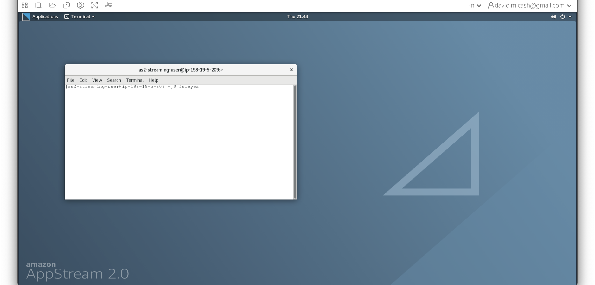
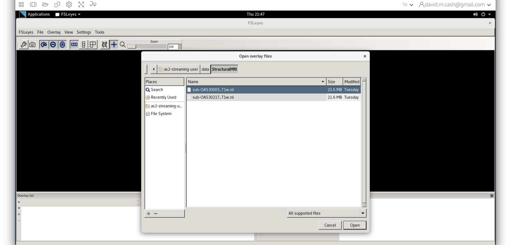
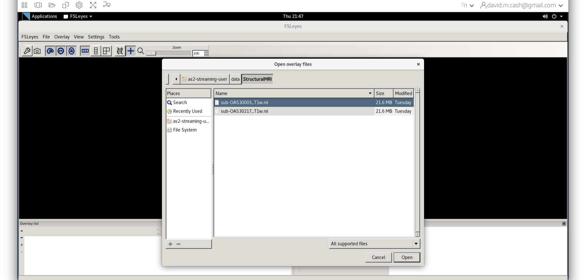
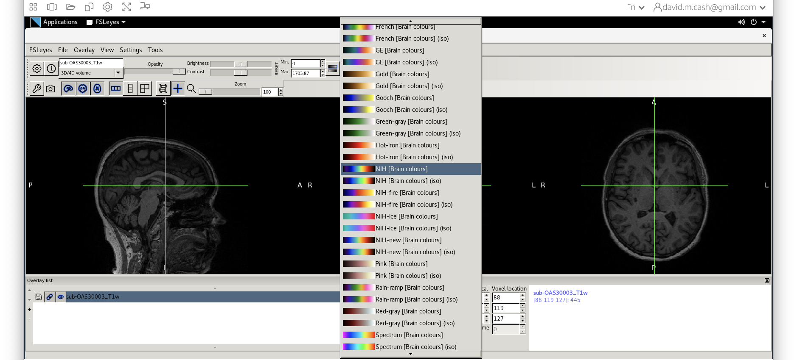
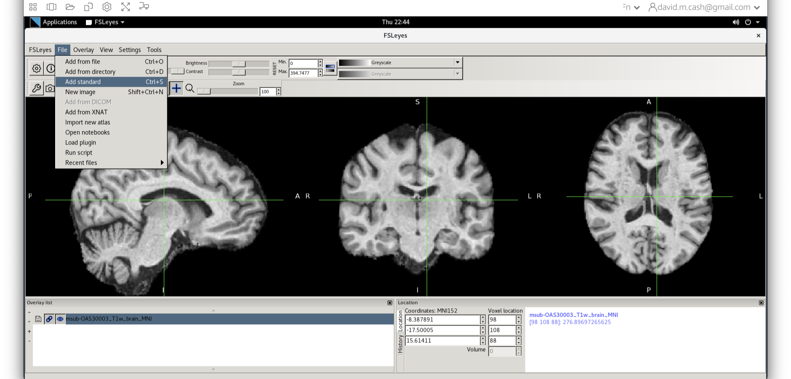
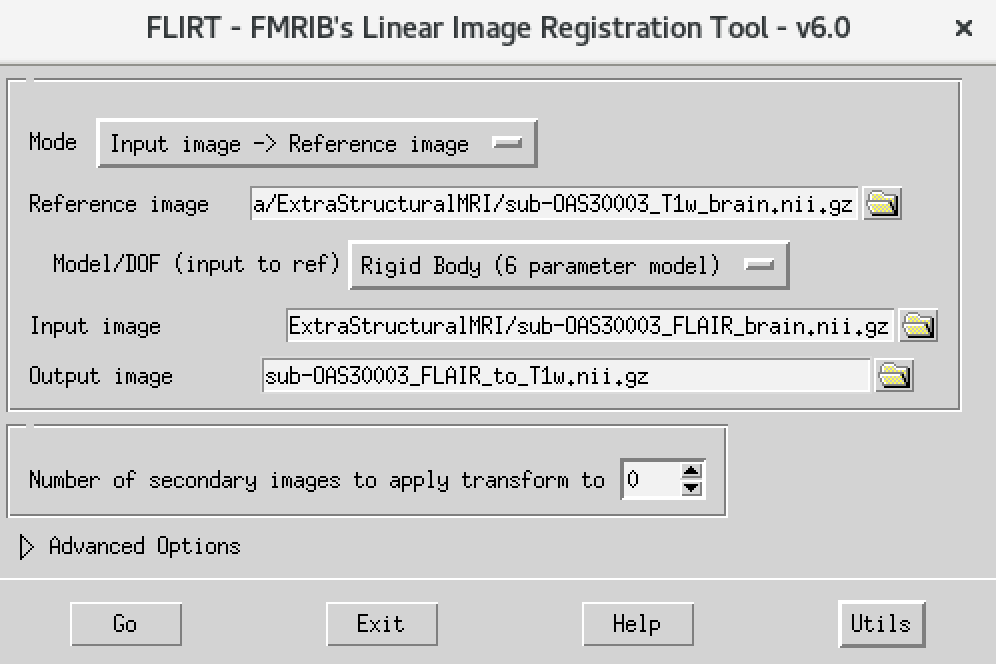

Structural MRI: Bias Correction, Segmentation and Image Registration
Last updated on 2024-06-23 | Edit this page
Estimated time: 65 minutes
Overview
Questions
- How do I process and quantify structural MRI scans?
- How do I register MRI with other modalities?
- How do I get key metrics out?
Objectives
- Perform basic pre-processing steps, such as bias correction and tissue segmentation
- Assess some common imaging artefacts in the sturctura MRI
- Discover how to align and quantify neuroimaging data at regional level
Introduction
In this section, you will be learning how to process and quantify structural MRI scans. T1-weighted structural MRI scans are the “workhorse” scan of dementia research. They provide high-resolution, detailed pictures of a patient’s anatomy, allowing researchers to visualize where atrophy caused by Alzheimer’s disease or other dementias is occurring. In addition, it provides anatomical reference to other imaging modalities, such as functional MRI and positron emission tomography (PET), that provide lower-resolution maps of brain function and pathology, so that regional quantification of key areas can be assessed in these scans.
We will be using two widely used software packages: SPM and FSL. These packages provide analysis and visualization functionality of structural and functional neuroimaging data, and they can be used in both cross-sectional and longitudinal studies. The subsequent outputs from these pipelines can be used in the quantification of other imaging modalities.
After the course, you will be able to perform basic measurements relevant to dementia research from structural MRI brain scans.
We will use the SPM and FSL tools to perform: * image visualization of analysis outputs, * intensity inhomogeneity correction, * structural MRI segmentation, * quantification of volumetric outputs, and * registration to a standard space atlas.
Opening up an image
We are going to be working in the StructuralMRI
subfolder under data in your home directory.From the
previous lesson, you learned how to view and navigate images.
Clicking on the Applications in the upper left-hand corner and select
the terminal icon. This will open a terminal window that you will use to
type commands 
From the terminal window, type fsleyes to open up the
image and have a look around. 
Now we choose the file sub-OAS_30003_T1w.nii by going to
the File menu and choosing the Add Image command  

Run Bias Correction and Tissue Segmentation
Small variations in the magnetic field can result in changes in the image intensity that vary slowly spatially. These variations are not due to anatomical differences. We can visually identify this image inhomogeneity in the white matter, where voxels in one part of the brain might be so affected by it that they have similar intensity values as grey matter voxels in other brain regions. However, the intensities in the white matter voxels should be more or less uniform throughout the brain. Any remaining inhomogeneity in the image can significantly influence the results of automated image processing techniques, so we need to correct for these effects. The process that removes this image inhomogeneity is typically referred to as bias correction.
The next step is to reliably identify what type of tissue each voxel contains. While the resolution of structural MRI is quite high (typically around 1 mm), there is still the likelihood that a voxel will contain more than one tissue in it. The process of tissue segmentation looks at the voxel intensity, compares it to its neighbours and prior information about what tissues we would expect to have in that voxel and assigns a probability that the voxel contains that tissue. It typically generates n different volumes, where n is the number of tissue types you want to use to classify the brain. We typically focus on three tissue probability maps in particular: * Grey matter (GM), * White matter (WM), and * Cerebrospinal fluid (CSF)
SPM performs the bias correction and tissue segmentation steps simultaneously. Follow the steps below to obtain bias-corrected images and tissue probability maps.
Bias Correction and Segmenation Steps
- Type
spm petto launch SPM (screenshot)
- SPM will then create a number of windows. You want to look at the
Main Menu Window that has all of the buttons.

- From main menu, select the Segment button (Screenshots). This will
launch a window known as the batch editor, where you can adjust
settings on the pipeline to be run.

- Edit the options for segmentation:
- Under Data->Channels->Volume, click on “Specify…”.

- In the dialog box that opens up, please navigate to the folder
dataand thenStructuralMRI. Then select the first imagesub-OAS30003_T1w.nii. Once you click on it, you will notice the file move down to the bottom of the box which represents the list of selected files.
- Click the Done button
- Back in the batch editor, under Data->Save Bias Corrected, please choose “Save Field and Corrected” ![Saving bias field and corrected images] (fig/aic_smri_seg_bcoption.png){alt=“Choose bias correction option”}
- Under the Tissues section, please make sure that the first three tissue types, which represent GM, WM, and CSF, have the native tissue subfield set to native, while the final three tissue types (4-6), which represent non-brain structures, have the native tissue subfield set to None. ![Only saving input from first three tissues] (fig/aic_smri_seg_native.png){alt=“Native segmentation”}
- Under Data->Channels->Volume, click on “Specify…”.
- Click the green run button to start! It should take about 5-10
minutes. You will see a lot of other things happening in other windows.
The terminal will say
Done - Segmentwhen it has finished.
Quality check
The quality check is an important part of any analysis. We are going to visualize the outputs from SPM Segment and make sure that the bias correction and segmentation have worked.
Bias correction
- Use
fsleyesagain and open up the original imagesub-OAS30003_T1w.niias you did at the start of the session. - Change the image lookup table to
NIH - Then change the image minimum to 40 and the maximum to 600. This
means that all intensities 40 and below will map to the first color in
the lookup table, and all voxels 600 and above will map to the last
color. The white matter should be yellow to red.

- Next add the bias corrected image, which is called
msub-OAS30003_T1w.nii. Change the lookup table to NIH as you did in Step 2. Change the minimum to 40 and maximum intensity to 500 similar to what you did in Step 2 and 3.
When you add this image, it will overlay on top of the original image. Think of this new image a completely opaque, so that you no longer see the original one. If you want to see the original one, then you need to either turn it off using the eye icon right by the file, or you need to turn the opacity (slider near the top of the screen which is marked opacity.)
Exercise 2
Use the eye icon in the overlay list right next to the file
msub-OAS30003_T1w.nii and turn this image off and on many
times. This will allow you to compare with the original image.
What do you notice about the image in the white matter area when comparing the bias correct and original image?
Tissue segmentation
Now that we are happy with the bias correction, lets look at the
tissue segmentation. 1. Use the icon to turn off the original image.
Select the bias corrected image and make sure the colormap is back to
the first option “Greyscale”  1. Now add the grey matter
probability image
1. Now add the grey matter
probability image c1sub-OAS30003_T1w.nii. 1. Choose the
probability map and set the lookup table to Red. Change the minimum
intensity to 0.2 and the maximum intensity to 0.9. This will eliminate
some noise from very low probability voxels. 1. Use the opacity slider
to make the grey matter probability map transparent.  1. Look around the image, zoom in places, and try turning the grey
matter probability map off and on. The goal is to make sure the grey
matter probability map is not: 1. Missing any grey matter 1. Not
including other tissue (WM, CSF, non-brain tissue that has a similar
intensity to GM)
1. Look around the image, zoom in places, and try turning the grey
matter probability map off and on. The goal is to make sure the grey
matter probability map is not: 1. Missing any grey matter 1. Not
including other tissue (WM, CSF, non-brain tissue that has a similar
intensity to GM)
Obtaining volume
One thing that we are often interested in is to obtain the actual volume of grey matter, or a particular brain region. There are helpful utilities in FSL to extract the volume from the tissue probability maps. First we will change our working directory to the Structural MRI folder:
Then we will run this command to get the total grey matter volume:
OUTPUT
Produce output for this commandThis will produce two numbers. The first number is the number of voxels in the grey matter. These voxels as discussed earlier have physical dimensions indicating how the volume that each individual voxel represents. So the second value indicates the total volume of the grey matter (usually represented in units of cubic millimeters).
Coregistration to standard space
MRI scans can be acquired in any orientation. Even when we think we are getting a sagittal or coronal acquisition, the patient may end up in the scanner at a slant. This makes it difficult to identify key anatomical landmarks. We may also want to compare common anatomical structures across a whole sample of subjects. The main solution to this is to use image registration to orient our images and align them with a standard anatomical coordinate system. In this case, we will be aligning our data to the Montreal Neurological Institute MNI152 atlas. We are not looking to perform an exact voxel to voxel match between our image and the atlas. Instead, we just want to align the images such that the orientation and the relative size are aligned.
Skull stripping
Before we can perform the registration, we will use the tissue
probability maps to skull strip the image. Skull stripping
removes the non-brain tissue (scalp, dura, neck, eyes, etc) from the
image. Before we run the commands, let’s first check what working
directory we are in by using the command pwd:
OUTPUT
Produce correct output for pwdIf you have a different output from the above, then run the following command:
First we will use the FSL utility fslmaths to create a
brain mask by using the tissue probability maps from SPM.
fslmaths is a great swiss-army knife utility to do lots of
helpful little image processing bits.
BASH
fslmaths c1sub-OAS30003_T1w.nii -add c2sub-OAS30003_T1w.nii -add c3sub-OAS30003_T1w.nii -thr 0.5 -bin sub-OAS30003_T1w_brain_mask.niiLet’s break this command down a little bit:
- First, we state the command we want to run
fslmaths - We then specify our input image, the GM map
c1sub-OAS30003_T1w.nii - We then specify the first operation
-add - We then specify what we want to add to our input image. In this
case, it is the WM map
c2sub-OAS30003_T1w.nii. The resulting image would contain the probability that a voxel is either GM or WM. - We then specify that we want to add another image, and this time it is the CSF map. This image now holds the probability that a voxel is GM, WM, or CSF, which are the three main tissue types in the brain that we want to process.
- We will then threshold this image at 0.5 using the
-thr 0.5option. This says to only keep voxels who have a probability of 0.5 or greater. All other voxels are set to 0. - Our final operation is to binarize the image. Any values
that are not zero are set to one. This creates a mask which says whether
the voxel is inside (1) or outside (0)
of the brain.
- Finally, we save our results into the new image file
sub-OAS30003_T1w_brain_mask.nii
Now that we have created a mask, we are going to remove all the information outside of the mask using the following command:
BASH
fslmaths msub-OAS30003_T1w.nii -mas sub-OAS30003_T1w_brain_mask.nii.gz msub-OAS30003_T1w_brain.niiThis command masks our bias corrected image with the brain mask and
makes a new file which has the name
msub-OAS30003_T1w_brain.nii. Take a look at the image in
fsleyes. 
We will then use the FSL registration program FLIRT to align
our image to the standard space MNI152. Please follow the steps below:
1. On the terminal window, please type in the following command
Flirt 1. This will open a dialog box. We will change the
following settings: 1. For reference image, click on the folder icon and
choose the image MNI152_T1_1mm_brain 1. For the input
image, please select the mask we created above
msub-OAS30003_T1w_brain.nii 1. For the output image, please
type in a new name msub-OAS30003_T1w_brain_MNI.nii The
final command setup should look like the screenshot below. 
If your window looks like this, then click the Go button at the bottom, in the terminal, you will see the command line program that would run what you have set up in the dialog box. If you were to select that command and run it in the terminal it would do the same thing.
Quality check
Let’s open fsleyes and open the output from the
co-registration msub-OAS30003_T1w_brain_MNI.nii. 
Now click on the Add Standard function. This is where fsleyes keeps all of the standard atlases and templates so that you can quickly access them. 
Select the MNI152_T1_1mm_brain from this list of files.

We can now check if our image is registered by flicking back and forth between the MNI image and our image.
Stretch exercises
If you have completed all of the above and want to keep working on more structural imaging data, please try the exercises below.
TODO: add the solution of the three tissue volumes
BONUS Exercise 2
The volumes that come out of fslstats assume that each
voxel is completely full of GM, even though for some voxels the
probability may be very small. That can lead to inaccuracies, so there
are a couple of ways we can more accurately measure from tissue
probability maps.
Before we start, let’s make sure we are in the right working
directory by using the cd command.
The first approach is to only count voxels with a majority of GM. So we will threshold by the value of 0.5 before calculating our volume.
OUTPUT
TODO: Output of fslstatsThe second approach is to get the mean and volume of the all the non-zero voxels.
OUTPUT
TODO: Output of fslstatsThis will produce three numbers: 1. The mean of the non-zero voxels 2. The number of voxels greater than zero. 3. The volume of the voxels greater than zero.
If you multiply (1) by (3), this would be what we call the probabilistic volume of the GM and it accurately accounts the amount of GM in each voxel.
How do these volumes compare with the original volume you obtained?
BONUS Exercise 3
Let’s take a look at our other image
sub-OAS30217_T1w.nii. Perform the same steps as you did for
the first image: * Segmentation * Skull Stripping * Co-registration to
standard space Run the same skull stripping and registration as you have
done before. Now open up both standard space images in
fsleyes
What do you observe about the images?
TODO: Provide solution
BONUS Exercise 4
Let’s now try to co-register two imaging modalities from one participant (within-subject registration)
At the end of the previous session on data visualization, you looked
at a T1-weighted scan and a FLAIR scan from the same participant
(sub-OAS30003_T1w.nii.gz and
sub-OAS30003_FLAIR.nii.gz, load them again in FSLeyes if
you need a refresh). As you will have noticed, they have different
dimensions, resolution and orientation, so if we want to look at the
same point in the brain in both images we need to align them.
First, we need to choose which image we want to keep unchanged (reference) and which one we want to align to the reference (input). Let’s assume we want to register the FLAIR image to the T1. We have already prepared a skull-stripped version of the images for you so they are ready to be aligned with FLIRT.
The way to do this is very similar to what you did before to
co-register a T1 to standard space. Please follow the steps below: 1. On
the terminal window, type Flirt 1. This will open the
dialog box you used before. The new settings are: 1. For reference
image, delete the text in the box and type
~/data/ExtraStructuralMRI, then click on the folder icon
and choose the image sub-OAS30003_T1w_brain.nii.gz 1.
Change the Model/DOF (input to ref) to
Rigid Body (6 parameter model) 1. For the input image,
click on the folder icon and choose the image
sub-OAS30003_FLAIR_brain.nii.gz 1. For the output image,
please type in a new name
sub-OAS30003_FLAIR_to_T1w.nii.gz
The final command setup should look like the screenshot below: 
If your window looks like this, then click the Go button at the bottom, in the terminal, you will see the command line program that would run what you have set up in the dialog box. If you were to select that command and run it in the terminal it would do the same thing.
Once done, open the result in FSLeyes:
We can now check if our image is registered by flicking back and forth between the T1 image and the FLAIR registered image.
Can you think of why the registered FLAIR image appears blurred in the sagittal and coronal plane?
Now try to do the opposite: co-register the T1 to the FLAIR.
What differences do you notice with respect to the previous case (FLAIR co-registered to T1)?
Can you think of different cases where you would want to use T1 or FLAIR as your reference?
TODO: add key points to solution
Key Points
- Structural MRI provides high-resolution anatomic information for neuroimaging analysis
- Bias correction removes image inhomogeneities
- Tissue segmentation identifies key tissue types (grey matter, white matter, cerebrospinal fluid) from T1 weighted images
- Co-registration of MRI to other modalities can be used to analyse these images at a regional level.